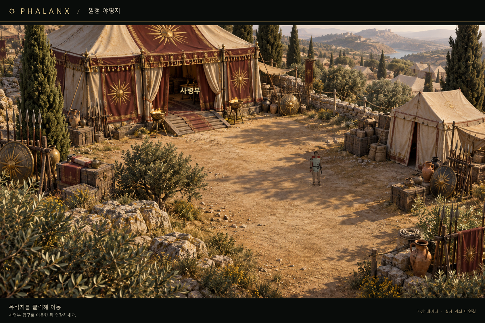
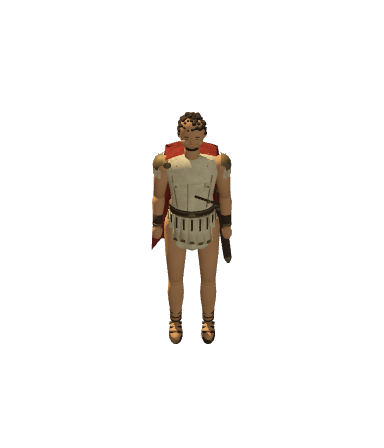
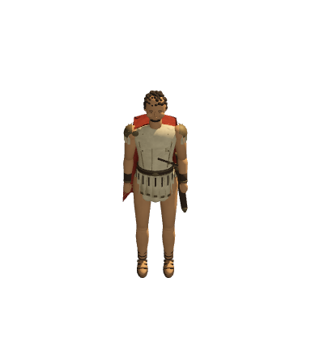
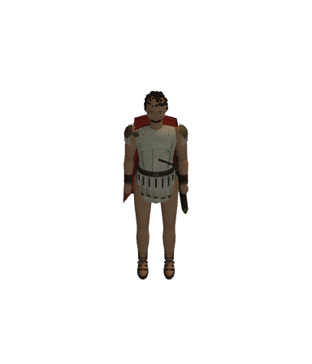
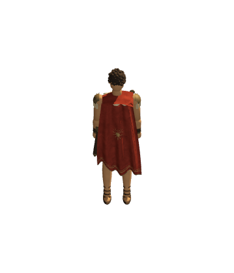
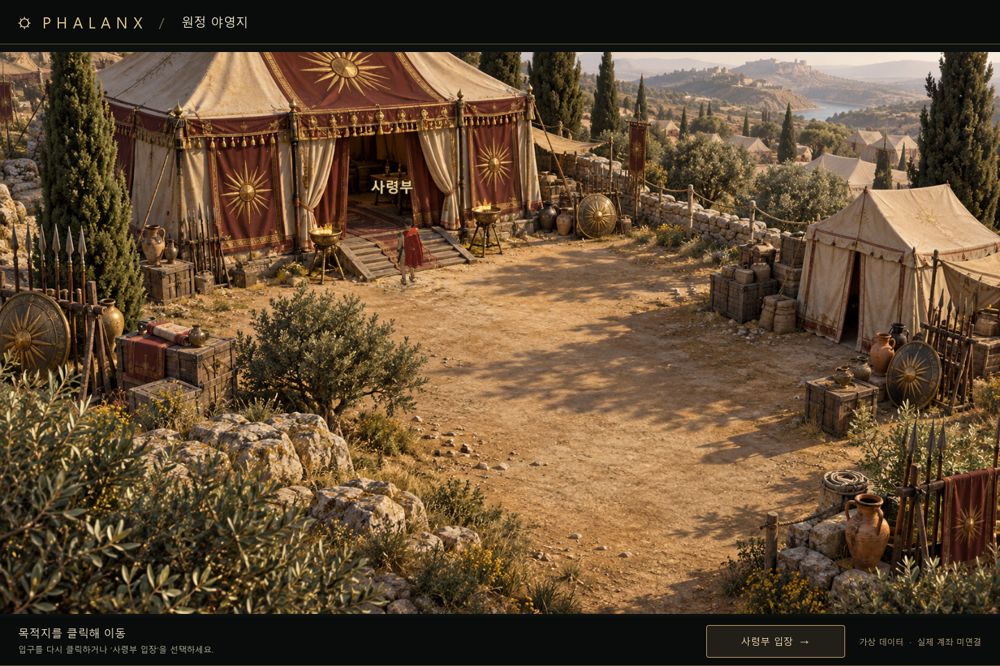
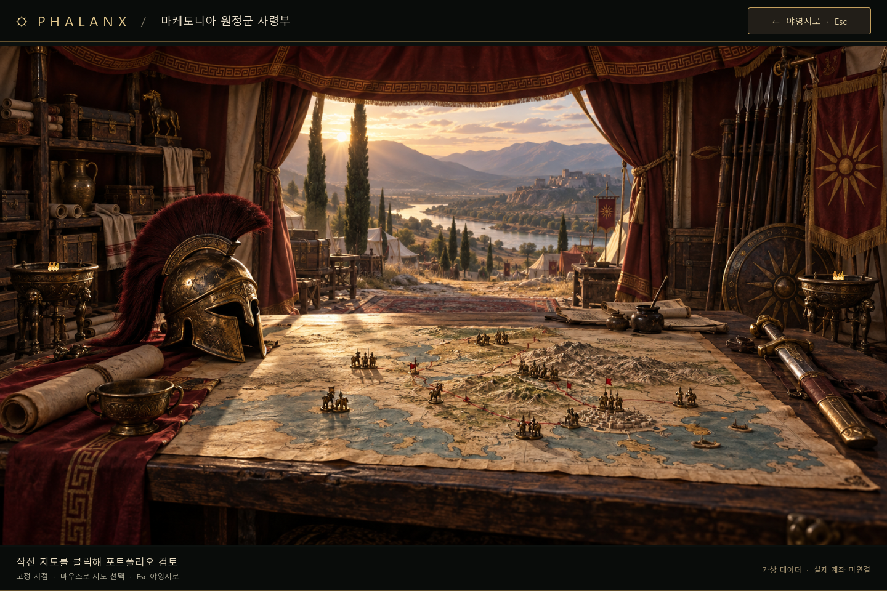
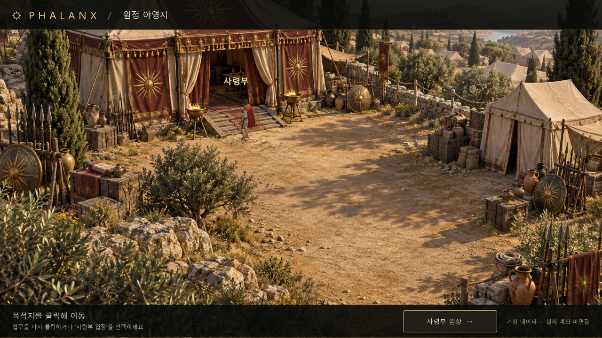
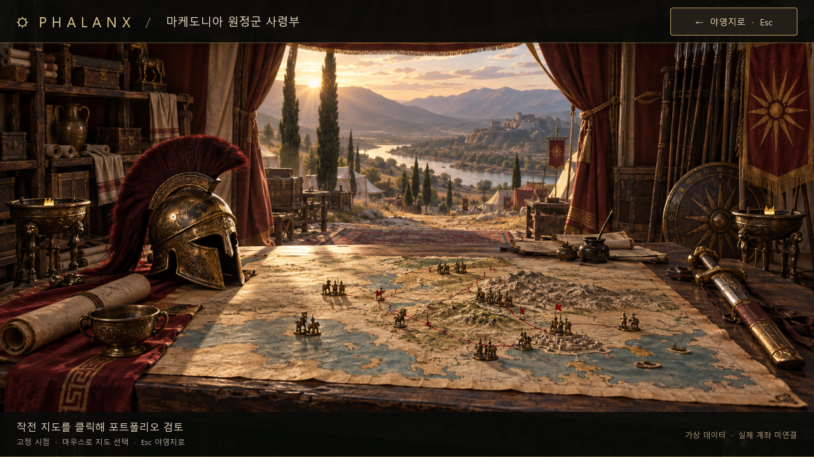

같은 배경·카메라·위치·포즈의 실제 GPU 렌더를 비교합니다. 배경 그림자는 그대로 두고, 그늘 위치에 따라 캐릭터의 직사광·주변광·드리우는 그림자를 함께 바꿨습니다.
2026-09-28 · 위 비교 촬영은 검수 스크립트의 위치 지정입니다. 아래 실제 창 검수는 컴퓨터 사용 도구의 OS 입력이며, 사람 플레이 녹화와 구분합니다.

수정 전수정 후



동일 포즈 GPU 검사: 그늘의 평균 밝기 ≈ 햇빛 아래의 70%
불투명 캐릭터 픽셀의 밝기를 비교한 한 가지 검수 포즈입니다. 모든 방향·재질이 정확히 같은 비율로 어두워진다는 뜻은 아닙니다. 그늘에서도 발밑 접촉 그림자와 주변광은 유지됩니다.




두 해상도의 전체 왕복은 정상 속도에서 확인했습니다. 이동 중 재지정·Alt+Tab 정지/복귀는 도구의 입력 간격을 확보하기 위해 검수 실행에서만 0.25배 재생으로 확인했고, 1배로 복구했습니다. 제품의 이동 속도는 변경하지 않았습니다.
그늘은 고정 배경에 맞춘 여섯 구역의 근사입니다. 잎의 개별 그림자가 몸을 가로지르는 정밀한 투영, 움직이는 태양·배경 그림자는 지원하지 않습니다. 캐릭터는 여전히 배경보다 단순한 코드 제작 모델입니다. 배경을 바꾸면 그늘·가림 구역도 다시 맞춰야 합니다.